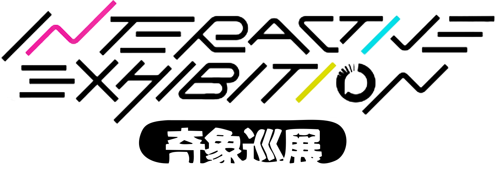

原图
未选择图片将图片拖到这里或点击“导入图片”JPG, JPEG, PNG, or WebP

24 × 24 像素图生成器
导入图片，并使用现有颜色生成 24 × 24 像素图。
将图片拖到这里或点击“导入图片”JPG, JPEG, PNG, or WebP
Temporary diagnostic for #D60C4A final assignments.
Final conservative cleanup diagnostics.
| Rank | Bead | HEX | L | C | H | ΔL | ΔC | ΔH | Identity | Neutral takeover | Final score |
|---|